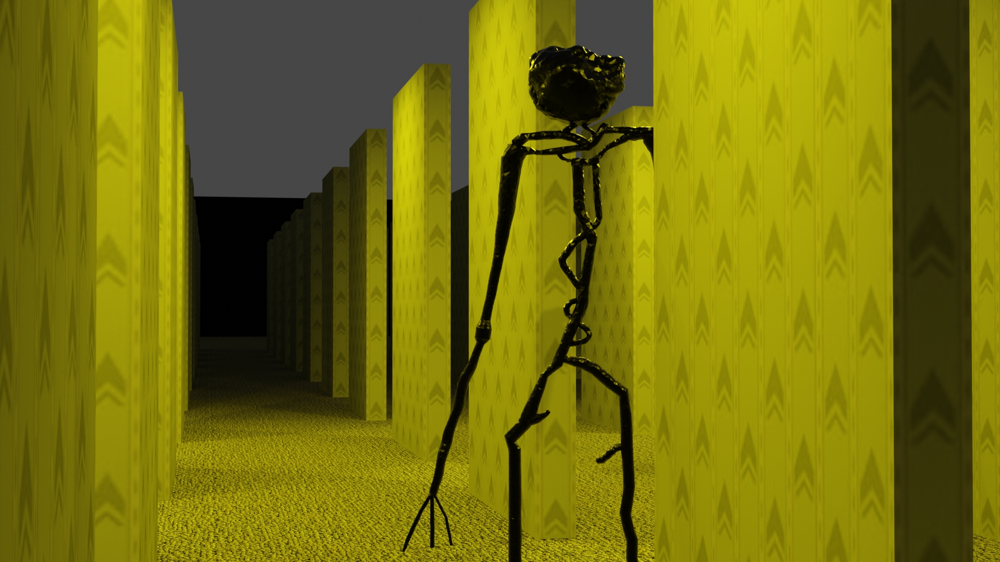

This render is from my early first year of Computer Animation and Web Design, it's a
building mirrored and another building floating thats broken, this render used cycles.

This render is from my early first year of Computer Animation and Web Design, it's a
building in a lighting to give a good representation of contrast between black and white.

This render is from the close to ending of my first year of Computer Animation and Web
Design, it's a group of medieval houses and buildings, this was rendered with eevee.
This render is from my early second year of Computer Animation and Web Design, it's a
computer desk with 2 holo candles and a normal one, this was rendered with cycles.
This render is from my early second year of Computer Animation and Web Design, it's a
recreation of a reddit thread/stories of a place called "The Backrooms". It was rendered in cycles.
This render is from my early second year of Computer Animation and Web Design, this is
also another part from The Backrooms. It was rendered with cycles.

This render is from my early second year of Computer Animation and Web Design, this
render has the monster from the first level of The Backrooms, it was rendered in cycles.